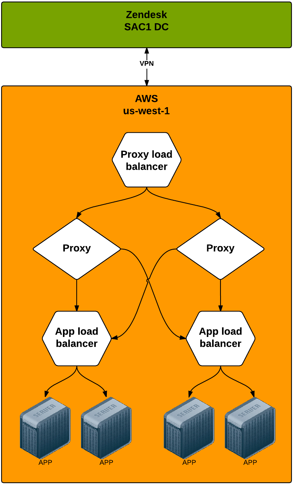

name: main class: center, middle # Predicting Customer Satisfaction ## With The Prediction App <br/> ### Ash McKenzie #### APAC Tech Lead DevOps Engineer ??? * Hello everyone, I'm Ash McKenzie from the Melbourne Ops team and I'm here to talk about --- # Topics ### CSAT ### Pacman ### Crystal Ball ### Prediction App ### Infrastructure ??? * We're going to cover the following topics --- layout: false class: center, middle name: csat background-image: url(./images/scratching-head.jpg) # CSAT? ??? * Most of you are probably thinking 'what on earth is CSAT?' --- layout: true class: topic-template # CSAT? --- ## According to Wikipedia: > In its simplest form, CSAT is expressed as a percentage between 0 and 100, with 100% representing complete customer satisfaction. Currently we rely upon the customer telling us if they are satisfied but we want to be able to automate this <i class="twa twa-smile"></i> --- layout: false class: center, middle name: prediction-app background-image: url(./images/confused-donkey.jpg) # Pacman? ??? * Pacman? What is this all about? --- layout: true class: topic-template # Pacman --- * Gets it's name because it gobbles data, just like the video game character * A Background service written in Clojure * Consumes ticket updates via Maxwell (via Kafka) * Creates background jobs that are ultimately sent to Crystal Ball for analysis --- layout: false class: center, middle name: crystal-ball background-image: url(./images/monkey-scratching-head.jpg) # Crystal Ball? ??? * Crystal Ball? Are we dabbling in the black arts now? --- layout: true class: topic-template # Crystal Ball --- * It's a rather apt name once you understand what it does * An HTTP API written in Python * Uses machine learning to create a single data model for a customer * Generates a CSAT score from ticket updates for a given customer data model --- layout: false class: center, middle name: prediction-app background-image: url(./images/confused-baby.jpg) # Prediction App? ??? * Prediction App? OK, you can probably guess what this one is all about :) --- layout: true class: topic-template # Prediction App --- name: csat-flow <img src="./images/csat-flow.png" /> ??? * The Prediction App is the project name given to Pacman & Crystal Ball collectively * Here you can see how all of the services talk to each other * It starts with a ticket update from Classic * The ticket update is observed by Maxwell * Pacman listens to a particular topic in Maxwell and creates a background job which is bound for Crystal Ball * Crystal Ball then processes the request and returns a CSAT score * The CSAT score is then written back to the ticket via the Classic API --- layout: false class: center, middle # Infrastructure ??? * Not only are Pacman & Crystal Ball really interesting and unique, but so is the infrastructure powering them! --- layout: true class: topic-template # Infrastructure --- * First customer oriented application in AWS! * Managed by Chef but exists outside of our traditional DC setup * Two prediction app clusters: * us-west-1 (married to SAC1 data center) * eu-central-1 (married to DUB1 center) * Both clusters have recently been completely recreated to more powerful instances (took a handful of hours) --- class: center name: satisfaction-app  ??? * Here is an architectural diagram showing the proxy load balancer, proxies, app load balancers and app servers * You can see all the AWS infrastructure in orange, married to the SAC1 data center via a VPN tunnel * The identical setup exists for infrastructure in the eu-central-1 AWS region except it is married to the DUB1 data center and also connected via a VPN tunnel * The main objectives of this architecture are * To ensure that a customers data model is only loaded into memory *once* * And to ensure resilience in the event of one or more proxy, app load balancer or app nodes becoming degraded --- layout: true class: topic-template # Questions? --- name: questions ## Questions? [amckenzie@zendesk.com](mailto:amckenzie@zendesk.com) OR [bunyip@zendesk.com](mailto:bunyip@zendesk.com) ??? * So that wraps up this presentation * If you have any questions about Pacman, Crystal Ball or anything else discussed in this presentation you can email me or the Bunyip team who are the maintainers of Pacman and Crystal Ball. --- name: thanks layout: false class: center, middle # Thanks! ### [amckenzie@zendesk.com](mailto:amckenzie@zendesk.com) ??? * Thanks and bye for now! <!-- ------------------------------------------------------------------------------------------- -->